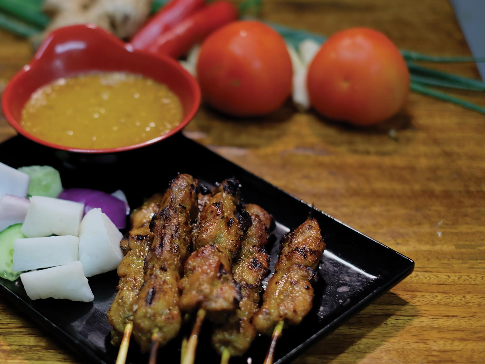

<section class="about-bg">
  <div class="container about-container">
    <div class="row">
      <div class="col-lg-6 about-left">
        <h2 class="about-h2 align-left">Proudly Malaysian Owned</h2>
        <p class="about-p"> Chef Rasa Sayang Group is a Malaysian Restaurant Group founded in Kuala Lumpur Malaysia
          since the 1980’s
          providing customers with Quality and Authentic Malaysian Food.
          <br>
          <br>
          They have now expanded bringing this exceptional taste to Chatswood, Sydney, Australia saving you the 6600km
          trip to satisfy your cravings for Malaysian food.
          <br>
          <br>
          Not only do we excel in providing authentic Malaysia taste, our food are made of quality ingredients.
          Our menu consists of many uniquely Malaysian food that are hard to find elsewhere in Sydney. Among them are
          our famous Yong Tofu, Pan Fried Raddish cake, our signature Wa Tan Hor, Butter Prawns and many more.</p>
      </div>
      <div class="col-lg-6 about-right">
        
      </div>
    </div>
  </div>
  <!-- <div class="container about-container">
    <div class="row">
      <div class="col-lg-6 about-intro-left">
        
      </div>

      <div class="col-lg-6 about-intro-right">
        <h2 class="about-h2 align-right">Malaysian Wok Fried Food</h2>
        <p class="about-p">As far as noodle dishes in Malaysia go, char kuey teow ranks among the richest in flavor and
          aroma. Flat rice noodles are stir-fried in soy sauce with spring onion, bean sprouts, prawns, cockles, and
          Chinese sausages. The cooking is done in a Chinese wok over high heat; the technique imparts a smoky aroma to
          the dish called wok hei (literally "breath of wok" in Cantonese).
          <br>
          <br>
          Char kuey teow is often cooked in individual batches, allowing the noodles to absorb the soy sauce and
          seasonings completely. Deluxe versions of char kuey teow incorporate garnishes of mantis prawns or crab meat.
          <br>
          <br>
          Food buffs recommend you go to Penang to get a taste of authentic char kuey teow. Traditional sellers make
          this dish over a charcoal stove, which some believe adds to the flavor.</p>
      </div>
    </div>
  </div> -->

  <!-- <div class="container about-container">
    <div class="row">
        <div class="col-lg-6 about-intro-left">
            
          </div>
      <div class="col-lg-6 about-intro-right">
        <h2 class="about-h2 align-right">Malaysian Street Food</h2>
        <p class="about-p"> Street food in Malaysia is available from the many hawkers and carts on the streets. Kuala
          Lumpur’s famous Jalan Alor night market is dedicated solely to hawker food stalls and little restaurants
          serving similar fare.
          <br>
          <br>
          Alternatively, street food in Malaysia can be purchased from hawker food courts such as Red Garden Paradise in
          Penang where you sit on a plastic table, and choose your preferred dish (or dishes) from the 40 or so
          different stalls set in the court to go with your beer. All this is accompanied by live performances by
          Malaysian singers who blare out loud American country & western tunes whilst you drink and dine to your
          heart’s content – don’t sit to close to stage unless you like loud music though!
          <br>
          <br>
          Satay, originally from Indonesia, satay skewers have become a firm favourite in Malaysia, with stalls dedicated exclusively to grilling skewered meats and serving them with the ever-popular peanut satay sauce. One of our favourite street foods in Malaysia!</p>
      </div>
     
    </div>
  </div> -->
</section>

<!-- <section class="about-gallery">
  <div class="container">
    <h2 class="gallery-h2">Specialities Gallery</h2>

    
      <div class="col-lg-4" class="gallery-card">
        
      </div>
      <div class="col-lg-4" class="gallery-card">
        
      </div>
    </div>
    <div class="col-lg-4" class="gallery-card">
      
    </div>
  
</section>
 -->